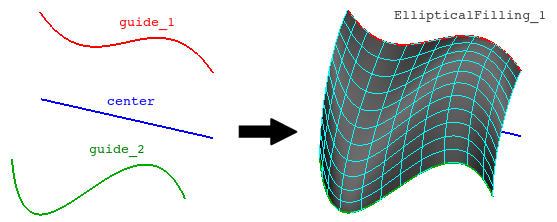

cfdmsh 4.0 documentation
cfdmsh 4.0 documentation cfdmsh 4.0 documentation


Creates a filling face having all its section being elliptical.
If the parallel argument equals True, the function creates a plane using the start vertexes of the source edges, then translates this plane so as to cut them at several positions. Else, each source edge is cut using a position parameter on it. At each position, an arc of ellipse is created using the center and guiding vertexes. Finally, a filling surface is made from these arcs of ellipse.
def MakeEllipticalFilling( center, guides = [None], np = 20, parallel = False, single = True, add = True, dim = 2 ):

| Name | Description | Type | GUI selection [?] | Selection by name [?] | Recursive [?] | Default value |
|---|---|---|---|---|---|---|
| center | The central edge of the elliptical filling. | Edge | - | yes | - | None |
| guides | The guiding edges. | List of 2 Edges | yes | yes | - | [None] |
| np | See here. | Integer | - | - | - | 10 |
| parallel | If equals True, the elliptical sections of the filling are forced to be parallel. | Boolean | - | - | - | False |
| single | See here. | Boolean | - | - | - | True |
| add | See here. | Boolean | - | - | - | True |
| dim | See here. | Integer | - | - | - | 2 |
| dim Value [?] | single Value [?] | Type | Number | Name |
|---|---|---|---|---|
| 1 | False | Edge | n | "EllipticalFilling (Edge)" |
| 1 | True | Compound of Edges | 1 | "EllipticalFilling (Edges)" |
| 2 | - | Face | 1 | "EllipticalFilling" |
from cfdmsh import * # To adapt to the cfdmsh installation method
vertex_1 = geompy.MakeVertex(0, 0, 0)
vertex_2 = geompy.MakeVertex(300, 0, 0)
vertex_3 = geompy.MakeVertex(0, -150, 0)
vertex_4 = geompy.MakeVertex(100, -250, 0)
vertex_5 = geompy.MakeVertex(200, -100, 0)
vertex_6 = geompy.MakeVertex(300, -150, 0)
vertex_7 = geompy.MakeVertex(0, 0, 200)
vertex_8 = geompy.MakeVertex(100, 0, 150)
vertex_9 = geompy.MakeVertex(200, 0, 200)
vertex_10 = geompy.MakeVertex(300, 0, 150)
edge = geompy.MakeEdge(vertex_1, vertex_2)
curve_1 = geompy.MakeInterpol([vertex_3, vertex_4, vertex_5, vertex_6], False, False)
curve_2 = geompy.MakeInterpol([vertex_7, vertex_8, vertex_9, vertex_10], False, False)
AddToStudy(edge, "center")
AddToStudy([curve_1, curve_2], "guide")
elliptical_filling = MakeEllipticalFilling(edge, [curve_1, curve_2])
elliptical_filling_edges = MakeEllipticalFilling(edge, [curve_1, curve_2], dim = 1)
Triangles formed by vertexes taken at a same position on the center and guiding edges should be always rectangle.
tougeron-cfd.com © 2016